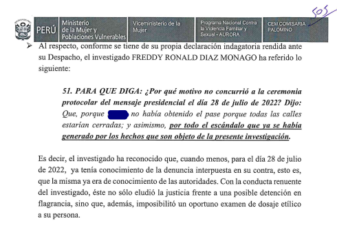
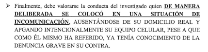
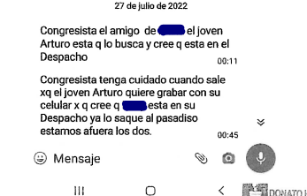

El congresista acusado de violación habría aprovechado su posición de poder desde el inicio del
caso, fingiendo desconocimiento, desapareciendo, manipulando informes, y hasta usando una sesión
reservada para presentar supuestas pruebas sin especialistas que las explicaran. Todos estos hechos
serán revisados ante el Poder Judicial en las audiencias que se vienen.
Para la denunciante de Freddy Díaz es un hecho que el camino que ha tomado no es fácil. Eso se lo
dejaron muy en claro las abogadas del Centro de Emergencia Mujer, en donde se presentó para pedir
apoyo para su denuncia.
Sin embargo, la lucha que emprendió desde el 27 de julio de 2022, cuando ingresó la denuncia por
violación sexual en la comisaría de San Andrés, en el Cercado de Lima, acompañada por el personal
del MIMP, no ha ido en descenso, y, en cambio, está a punto de empezar su fase crucial, luego de un
largo periodo de silencio fiscal que ha llegado a extenderse por casi medio año, pero que finalmente
parece estar encaminado en buen rumbo tras haberse formalizado el pedido de investigación preliminar
el último 9 de enero y al disponerse recientemente el requerimiento de prisión preventiva por nueve
meses en su contra.
Un inicio poco favorable
Apenas se dispuso el periodo de diligencias preliminares por 90 días el 28 de julio de 2022 y con el
objetivo de investigar los pormenores del hecho, la Segunda Fiscalía Suprema Penal del Ministerio
Público buscó contactarse con Freddy Díaz, pero se dio con la sorpresa de que el congresista se
encontraba en condición de “no habido” desde que se suscitó el hecho.
Ante ello, el 31 de julio se emitió un pedido de impedimento de salida del país en contra del
parlamentario, y posteriormente, atendiendo al pedido de entidades como la Defensoría del Pueblo, se
emitió también un pedido de detención preliminar contra Freddy Díaz Monago ante el Poder Judicial.
La respuesta a ambas solicitudes fiscales se dio el 5 de agosto, tres días después de que el
investigado reapareciera ante la Fiscalía con pasaporte en mano indicando que se allanaría a la
justicia, y negando el hecho con discursos que caían en el machismo. Pero la decisión del Poder
Judicial resultó insólita.
El juez Carlos Checkley, a cargo del Juzgado Supremo de Investigación Preparatoria, anunció que no
se detendría al presunto violador, pese a que este había pasado cinco días en la clandestinidad,
desde el 27 de julio hasta el 1 de agosto. Si no que contra él solo se dispondría el impedimento de
salida del país por nueve meses, decisión que fue apelada por la defensa de Díaz mediante la
presentación de una tutela de derechos que se rechazó.
Mientras tanto, las pericias fiscales seguían su curso, pero ¿durante cuánto tiempo y qué tan
confiables fueron estas?
El informe pericial psicológico y su escandaloso resultado
Los exámenes periciales toxicológicos y psicológicos realizados por la Fiscalía registraron
irregularidades desde el inicio del caso. Según la carpeta fiscal, el 27 de julio se emitieron las
órdenes para la realización de los exámenes de peritaje de la denunciante, los cuales fueron tomados
a las 7.00 p. m., y para cuando ella fue a hacérselos, el alcohol ya no se encontraba en su sistema.
Fue así que, mientras que los exámenes no eran realizados a tiempo en el caso de la denunciante,
Díaz Monago decidió ausentarse de las diligencias iniciales.
Un informe realizado por el CEM detalla que para el 28 de julio, fecha de la sesión solemne en el
Congreso, Díaz Monago ya estaba enterado de la acusación, y que, incluso, decidió faltar a dicha
cita “porque no se había obtenido el pase, pues las calles estaban cerradas”, y “por el escándalo
que ya se había generado de los hechos que son objeto de la presente investigación”.


Por otro lado, es en el informe de peritaje psicológico en el que los resultados se tornan más
cuestionables, pues en diferentes ocasiones de la entrevista se detalla que la víctima presentaba
signos de shock postraumático, pero ello no es advertido por los dos peritos de psicología. En
cambio, solo recomiendan que ella debería tomar “apoyo psicológico individual de manera preventiva”.
Tras la lectura de este documento, la defensa legal de la denunciante tomó otras tres pericias, dos
psiquiátricas y una psicológica, todas basadas en la misma manifestación de la cámara Gesell, las
cuales rebaten las conclusiones del cuestionado documento, en los que sí se advierte la situación de
vulnerabilidad de la denunciante.
Ante este escenario, el Ministerio Público decidió incluso apartar la cuestionada prueba de los
argumentos para formalizar la investigación preparatoria contra Díaz, y optó por tomar en cuenta
pruebas más sólidas, como los videos grabados por el amigo de la víctima y los hechos suscitados
días después de realizada la denuncia.
Sobre ello, la defensa de la víctima señala que lo presentado ante la Fiscalía evidencia que hay
irregularidades, ya que hay juicios y afirmaciones carentes de sustento en el protocolo elaborado de
medicina legal.
“Hay un apartamiento de la guía establecida por el propio instituto de medicina legal de cómo tienen
que actuar los profesionales de salud ante situaciones como estas, en las que se les ordena realizar
un peritaje para este tipo de delitos”, aseveró en exclusiva para La República la abogada Raiza
Arroyo del estudio Ugaz, el cual lleva el caso.
A las suspicacias resultantes de esta pericia, se suma la renuncia de las dos abogadas que se
encargaban de la defensa de Díaz, quienes justificaron su apartamiento del caso por “temas de
ética”, después de revelarse el informe.
El silencio fiscal y la investigación preliminar vencida
Desde el inicio de las diligencias preliminares el 31 de julio de 2022 hasta la formalización de la
investigación preparatoria el 09 de enero de 2023 han pasado seis meses, de los cuales solo tres de
ellos estaban contemplados para la investigación preliminar, por lo que debía culminar el 31 de
octubre del año pasado.
Hasta antes del primero de enero, lo último que se sabía del caso era que el 19 de septiembre se
había buscado a Díaz Monago en su domicilio de Los Nogales para constatar que seguía a disposición
de las investigaciones, y tras ello no se supo más.
Díaz, incluso, fue suspendido durante este periodo y no tuvo capacidad legislativa, pero dicha
situación no fue aprovechada por la Fiscalía de la Nación, ya que reactivó sus diligencias hasta dos
días después de que Díaz saliera de la suspensión.
Para la abogada Raiza Arroyo, la demora para este tipo de denuncias “es justificable, entendiendo la
carga procesal que existe en el Perú” por casos como los que implican una agresión sexual. Sin
embargo, es una irregularidad que, incluso teniendo en cuenta esta problemática, no debería ser
normalizado, pues pone en peligro el proceso judicial.
El abogado José Ugaz, representante de la denunciante, aseveró sobre ello que en el país los plazos
de atención a este tipo de casos son generalmente ser más de un año. A ello agrega que el perfil
político de Díaz.
Además, que la Fiscalía de la Nación formalice la investigación y recién dos días después presente
el requerimiento de prisión preventiva demuestra que, si bien hubo una intención de apurar el
proceso, aún existe un retraso palpable en la gestión de los pedidos.
Entre los pendientes que faltan agregarse al caso y que deben ser resueltos por el Ministerio
Público, también está el pedido de la defensa de la denunciante por ingresar al guardia de seguridad
de apellido “Tolentino” como cómplice del delito, que impidió que el compañero de trabajo de ella
ingresara al despacho a buscarla, y que incluso advirtió a Díaz Monago sobre la situación.
Así lo declaró el mismo excongresista en la carpeta fiscal del caso, en donde adjunta la captura de
pantalla de la advertencia de su guardia de seguridad.

Ahora, la Fiscalía se alista para sustentar un pedido de prisión preventiva por nueve meses en su
contra, a fin de que afronte las investigaciones desde la cárcel y que parece ser favorable para la
denunciante, luego de haberse aprobado el desafuero de Díaz en e Legislativo.
El abuso de poder de Freddy Díaz sostenido por el Congreso
Las conversaciones mantenidas entre el exlegislador y su seguridad e, incluso, con la víctima
demostrarían la injerencia de poder que mantuvo Díaz desde el inicio del caso, cuando en las
declaraciones de la extrabajadora de su despacho se denota su influencia sobre ella para inducir a
que se quede para seguir conversando del trabajo mientras la embriagaba.
Sobre ello, Ugaz mencionó que el caso es emblemático porque el acusado fue un congresista y que, si
bien el delito de violación sexual es frecuente en el país, este tipo de agresión es un “delito de
poder”, tal como Díaz lo tenía al ejercer una función pública.
Una expresión más de esta situación se dio durante el pleno del Congreso del último 10 de enero,
cuando la defensa de Díaz aprovechó la sesión reservada para presentar un video a inicios de las
investigaciones, en el que la víctima niega los hechos, pero en el que también queda registrada la
presencia de elementos contundentes para la investigación. A pesar de ello, estos materiales no han
sido evaluados por expertos ante el pleno, lo que generó el blindaje a su favor sobre el que
retrocedieron los legisladores este jueves, dejándolo inhabilitado por 10 años de cualquier función
pública.
Otro “elemento contundente” —afirma la defensa de la sobreviviente— es el informe médico que ya ha
sido detallado en el primer capítulo de este especial. Durante los 20 minutos de reserva, la defensa
de Díaz Monago ni siquiera precisó que este documento había sido obviado por la Fiscalía, al haber
dudas sobre su veracidad.
Tras el escarnio público, el Congreso tomó la decisión de volver a votar su inhabilitación por 10
años, pedido que fue aprobado con 77 votos a favor y un único voto en contra, del mismo
excongresista.
La defensa y la denunciante se encuentran seguros de contar con los elementos suficientes para
lograr justicia en este caso, en el que, como muchos otros en el país, han existido más
irregularidades tanto en materia de tiempos procesales como procedimentales y que no es sino la
máxima expresión del atraso que existe en el país en casos de violencia de género.
Sobre ello, Ugaz consideró que lo que sería necesario, para que situaciones como estas no vuelvan a
pasar, es generar “un cambio de política preventiva”, el cual no es posible debido a que muchos se
oponen a debatir sobre educación de género, empoderamiento de la mujer, cuidado y educación de los
menores y los vulnerables. “Porque el problema penal no va a resolver el problema de las violaciones
en el Perú”, señaló.
“A este señor le podrán poner cadena perpetua, pero eso no va a evitar que mañana, más tarde, sigan
habiendo violaciones, feminicidios y agresiones, cuando, además, en la mayoría de los casos son
intrafamiliares. Y eso requiere una política sexual preventiva a la que algunos sectores muy
conservadores de este país se niegan”, enfatizó.
La sobreviviente de la violación coincide con Ugaz, pues también considera que casos como el suyo
siguen el mismo proceso lento y muchas incluso continúan sin obtener justicia, un patrón
“normalizado” en el sistema judicial. “De acuerdo a la mayoría de casos que he venido escuchando y
que he estado investigando, en el Perú está tan normalizado este tipo de situaciones que veo mi caso
frente a otros y pienso que solo le han dado un poquito de prioridad por el hecho de tratarse de un
congresista”, indicó.
Ahora, dado que la Fiscalía se encuentra evaluando los nueve meses de prisión preventiva contra el
desaforado exparlamentario Freddy Díaz, la denunciante no duda en señalar que “la justicia que
tarda, no es justicia”, por lo que espera estar finalmente cerca de lograrlo.